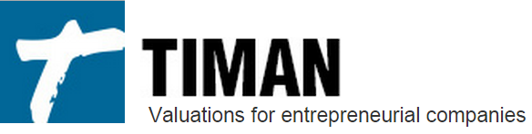

Timan LLC
-
Built systems to automate financial data acquisition and manipulation for more efficient company stock valuation.
-
Began with a Python web scraper designed to obtain data for analysis, but faced problems making code compatible with Windows and OSX.
-
Successfully completed the cross-compatible Python scraper over the course of 2 months.
-
Later created a Java version of the scraper which included a JavaFX GUI.